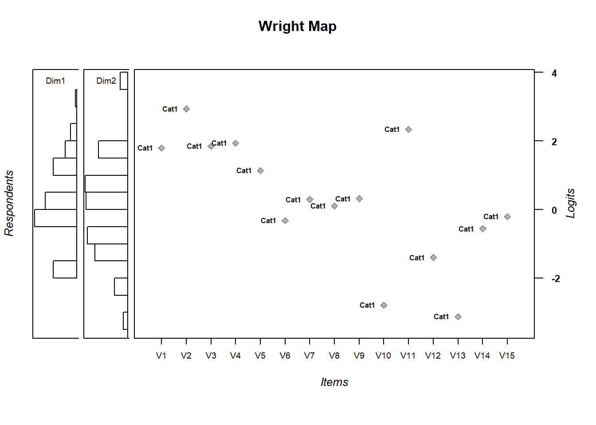

Chapter 7 Multidimensional Rasch Model
What if we envision something that’s multidimensional? We can model that with TAM. IN fact, this is one of TAM’s great strengths. Do read package documentation, though. As the number of dimensions grows, you’ll have to use particular estimation methods else the model will take to long to run.
7.1 we start by assigning the items to a dimension using a Q-matrix
If we want to have two dimensions, we’ll create a matrix with two columns. A 1 or 0 denotes whether that item belongs to dimension 1 or 2 (or both!)
## [,1] [,2]
## [1,] 1 0
## [2,] 1 0
## [3,] 1 0
## [4,] 1 0
## [5,] 1 0
## [6,] 1 0
## [7,] 1 0
## [8,] 0 1
## [9,] 0 1
## [10,] 0 1
## [11,] 0 1
## [12,] 0 1
## [13,] 0 1
## [14,] 0 1
## [15,] 0 1click on the “Q” object in the environment pane to see what we just made
7.2 Run the multidimensional Rasch model
7.3 \(\theta\) and \(\delta\)
## Iteration in WLE/MLE estimation 1 | Maximal change 2.105
## Iteration in WLE/MLE estimation 2 | Maximal change 0.7201
## Iteration in WLE/MLE estimation 3 | Maximal change 0.0844
## Iteration in WLE/MLE estimation 4 | Maximal change 0.0235
## Iteration in WLE/MLE estimation 5 | Maximal change 0.0077
## Iteration in WLE/MLE estimation 6 | Maximal change 0.0026
## Iteration in WLE/MLE estimation 7 | Maximal change 9e-04
## Iteration in WLE/MLE estimation 8 | Maximal change 3e-04
## Iteration in WLE/MLE estimation 9 | Maximal change 1e-04
##
## -------
## WLE Reliability (Dimension1)=0.185
## WLE Reliability (Dimension2)=0.492## Item fit calculation based on 15 simulations
## |**********|
## |----------|## parameter Outfit Outfit_t Outfit_p Outfit_pholm Infit Infit_t Infit_p Infit_pholm
## 1 V1 0.6456717 -7.99489181 1.296877e-15 1.815628e-14 0.8324660 -3.484057660 0.0004938731 0.007408096
## 2 V2 3.4831046 16.13112416 1.541881e-58 2.312822e-57 1.2293208 2.260337977 0.0238002827 0.333203958
## 3 V3 1.0062745 0.12261163 9.024146e-01 1.000000e+00 1.0220834 0.432899685 0.6650876490 1.000000000
## 4 V4 0.9426341 -1.06099844 2.886906e-01 1.000000e+00 0.9704881 -0.525793161 0.5990319267 1.000000000
## 5 V5 1.0225818 0.60772972 5.433667e-01 1.000000e+00 1.0256471 0.707675030 0.4791470870 1.000000000
## 6 V6 0.9978663 -0.08506242 9.322118e-01 1.000000e+00 1.0002128 0.008377704 0.9933156376 1.000000000
## 7 V7 0.9511051 -1.85954941 6.294930e-02 8.183409e-01 0.9691692 -1.163037377 0.2448143379 1.000000000
## 8 V8 0.9727336 -1.03555420 3.004102e-01 1.000000e+00 0.9765406 -0.883446868 0.3769948775 1.000000000
## 9 V9 0.9686430 -1.16906639 2.423769e-01 1.000000e+00 0.9749467 -0.927282022 0.3537801259 1.000000000
## 10 V10 1.0279607 0.30468958 7.606026e-01 1.000000e+00 1.0087145 0.123623629 0.9016132825 1.000000000
## 11 V11 0.9519141 -0.70713196 4.794845e-01 1.000000e+00 1.0006288 0.028448997 0.9773040462 1.000000000
## 12 V12 1.0478752 1.14245376 2.532655e-01 1.000000e+00 1.0167644 0.416813610 0.6768147468 1.000000000
## 13 V13 0.8797721 -1.18389446 2.364548e-01 1.000000e+00 1.0121026 0.145550485 0.8842762592 1.000000000
## 14 V14 0.9845654 -0.54934128 5.827713e-01 1.000000e+00 0.9842492 -0.548242353 0.5835255043 1.000000000
## 15 V15 0.9738287 -0.98651166 3.238821e-01 1.000000e+00 0.9796662 -0.761627819 0.4462821664 1.000000000## Dim1 Dim2
## 0.6738227 0.68149347.3.1 Wright Map
MDthetas.multi <-
cbind(persons.multi$theta.Dim01,persons.multi$theta.Dim02) #one line
wrightMap(MDthetas.multi, thresholds.multi) #second line
## Cat1
## V1 1.7928772
## V2 2.9363708
## V3 1.8478088
## V4 1.9375305
## V5 1.1390076
## V6 -0.3249207
## V7 0.2915955
## V8 0.1009827
## V9 0.3188782
## V10 -2.7882385
## V11 2.3348694
## V12 -1.3975525
## V13 -3.1209412
## V14 -0.5602112
## V15 -0.2038879Compare the first unidimensional model to the multidimensional one
## 'log Lik.' -7343.562 (df=16)## 'log Lik.' -7334.79 (df=18)## Model loglike Deviance Npars AIC BIC Chisq df p
## 1 mod1 -7343.562 14687.12 16 14719.12 14797.65 17.54463 2 0.00015
## 2 multi -7334.790 14669.58 18 14705.58 14793.92 NA NA NAAlternatively, you can use IRT.compareModels
## $IC
## Model loglike Deviance Npars Nobs AIC BIC AIC3 AICc CAIC
## 1 mod1 -7343.562 14687.12 16 1000 14719.12 14797.65 14735.12 14719.68 14813.65
## 2 multi -7334.790 14669.58 18 1000 14705.58 14793.92 14723.58 14706.28 14811.92
##
## $LRtest
## Model1 Model2 Chi2 df p
## 1 mod1 multi 17.54463 2 0.0001549648
##
## attr(,"class")
## [1] "IRT.compareModels"## Absolute and relative model fit
##
## Model loglike Deviance Npars Nobs AIC BIC AIC3 AICc CAIC
## 1 mod1 -7343.562 14687.12 16 1000 14719.12 14797.65 14735.12 14719.68 14813.65
## 2 multi -7334.790 14669.58 18 1000 14705.58 14793.92 14723.58 14706.28 14811.92
##
## Likelihood ratio tests - model comparison
##
## Model1 Model2 Chi2 df p
## 1 mod1 multi 17.5446 2 2e-04We see that model multi fits slightly better. However, the log likelihood difference test shows the difference is statististically significant.
| Model1 | Model2 | Chi2 | df | p |
|---|---|---|---|---|
| mod1 | multi | 17.54463 | 2 | 0.000155 |
compare$LRtest7.4 Exercises
- what evidence points towards multidimensionality?
- compare the multidimensional model to the PCM model